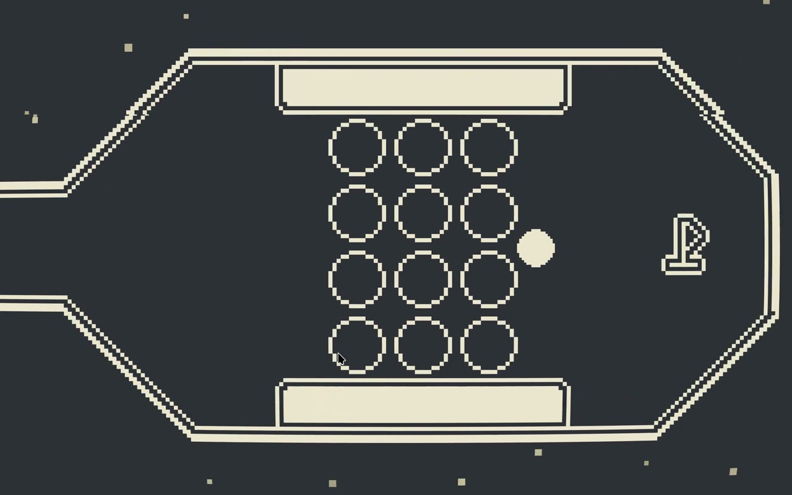

01 / Development
The first idea
The One Bit jam’s theme was Winter, with an additional restriction of using a maximum of two colours at a time. At first I started with a story. I thought about a kid who has just found out he might not make it to Santa’s “good kids” list, and tries to make up for it by doing a list of last-minute chores and good actions. It was supposed to fall into the party game genre.
Unfortunately, as much as I liked this idea, I thought that many of my minigame ideas, like decorating the Christmas tree or baking a cake, would be hard to represent with the two available colours. Knowing I only had a week until the competition finished, I chose to pivot to another idea that finally became known as ThawStroke.
02 / Development
Shrinking as a tool
It is inspired by the minigame from Undertale, but I expanded on it by not only treating the melting of a snowball as a loss condition. I made it into a tool that could be used to unlock faster completion times on different levels.

03 / Development
What I made
I made everything myself. I had to learn quite a bit about the usage of signals in Godot, and I ran into quite a few quirks of the physics engine that didn’t like me resizing the player’s collision shape every frame.
04 / Development
After the jam
After the game jam ended, I accumulated lots of feedback from the players. Most notably, some players had issues with the click-and-drag controls of the snowball when it was small, music overlapping, and non-working UI elements. There were also bugs with falling through walls when the player was very small, or getting stuck between two walls when the player grew too large.
Many of the issues were a result of the tight time constraint I had for developing the project. I made a short YouTube and TikTok series about fixing the issues in my game, and the updated version is available to play on itch.io right now.
05 / Development
The result
I am very proud of the final result in the jam, especially being 11th in gameplay out of so many other amazing projects. I think this was a great result for my first game jam.
Looking back, I would surely spend a bit more time making more levels to better show off the unique shrinking mechanic of the game. That being said, I know I made the most out of the time I was given by the organisers, all while still having my schoolwork and incoming final exams.